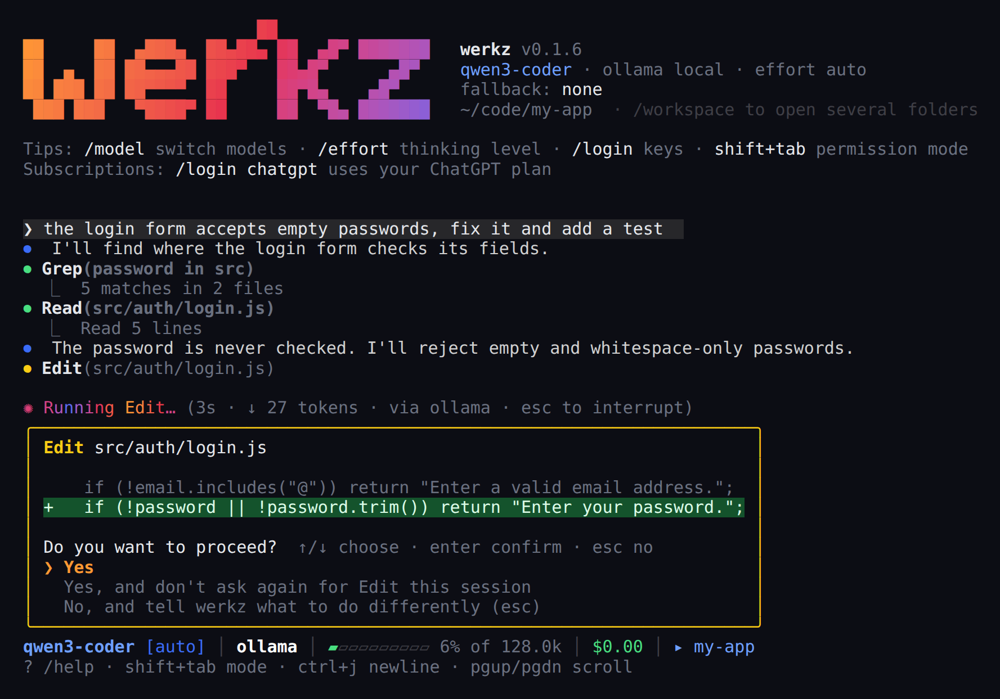

Bring your own model
Claude, OpenAI, Grok, Gemini, OpenRouter, Groq, or fully offline with Ollama. Switch with /model and keep the conversation.
werkz reads your codebase, edits files and runs commands, asking before anything risky. Use an API key, your ChatGPT or Claude subscription, a free tier, or a model on your own machine.
curl -fsSL https://raw.githubusercontent.com/TonmoyTalukder/werkz/main/install.sh | shInstalls the latest release with an app icon, then keeps itself up to date.
brew install --cask ZenixBit/tap/werkzmacOS or Linux. Update with brew upgrade --cask werkz.
sudo install -d -m 755 /etc/apt/keyrings
curl -fsSL https://tonmoytalukder.github.io/werkz/werkz.gpg | sudo tee /etc/apt/keyrings/werkz.gpg >/dev/null
echo "deb [signed-by=/etc/apt/keyrings/werkz.gpg] https://tonmoytalukder.github.io/werkz/apt stable main" | sudo tee /etc/apt/sources.list.d/werkz.list
sudo apt update && sudo apt install werkzDebian and Ubuntu. Then sudo apt upgrade keeps it current.
sudo curl -fsSL https://tonmoytalukder.github.io/werkz/rpm/werkz.repo -o /etc/yum.repos.d/werkz.repo
sudo dnf install werkzFedora and RHEL. Then sudo dnf upgrade keeps it current.

Works with the model access you already have
Describe a task in plain words. werkz plans it, searches and reads your code, makes the change and checks it with your own tests and tools.
Claude, OpenAI, Grok, Gemini, OpenRouter, Groq, or fully offline with Ollama. Switch with /model and keep the conversation.
Sign in with ChatGPT to use your plan, or run your own Claude Code on your Claude subscription. /usage shows your limits.
Edits and commands ask first. Anything outside your project always asks, and credential files are never opened.
Prompt caching with keep-alive, automatic compaction, trimmed tool output, and a context window you can set yourself.
Optional workspaces group folders and their environment variables, so one task can span a frontend and its API.
Installed copies update themselves; Homebrew, apt and dnf installs are told the exact command when a release is out.
OpenAI and Anthropic set different rules for other apps, so the two work differently. Here is exactly what to do, and what happens.
For ChatGPT Plus and Pro, and Codex users. werkz uses OpenAI's official Sign in with ChatGPT; it doesn't use the Codex app or its login.
/login chatgpt. Your browser opens; choose Continue with ChatGPT./model and pick a model marked plan.Over SSH, werkz prints the link and the port to forward. OpenAI doesn't share plan usage with apps, so /usage shows it only when ChatGPT reports it; see chatgpt.com/settings/usage. /logout chatgpt signs out.
For Claude Pro and Max. Anthropic doesn't let other apps sign in with a Claude account, so werkz runs your own Claude Code, which uses its own login.
claude in a terminal and sign in with /login. werkz never sees this login./model and pick a model marked (Claude Code).The status bar and /usage show your 5-hour and weekly limits, and a model's own weekly limit such as Fable, with when each resets. If werkz says Claude Code isn't signed in, run claude and /login again.
Press Shift+Tab to choose how much werkz may do on its own. Faster modes last only for the current session.
~/.ssh and ~/.aws are never opened, in any mode.| Mode | Reading | Edits | Commands |
|---|---|---|---|
| Default | Allowed | Asks | Asks |
| Accept edits | Allowed | Allowed | Asks |
| Planread-only | Allowed | Blocked | Blocked |
| Auto | Allowed | Allowed | Allowed |
| Bypassconfirmed each time | Allowed | Allowed | Allowed |
Long coding sessions re-send the whole conversation with every request. werkz makes that cheap without you managing it.
Follow-up requests read 97–99% of their input from Claude's prompt cache, which werkz keeps warm while you think.
At 300k tokens by default, werkz replaces a long conversation with a structured summary; /compact does it on demand.
/context window 350k caps the window for every model, and werkz keeps the conversation inside it.
Long test and build output is trimmed to what matters, with the full text saved to a file the model can read if it needs to.
Linux (x86-64, ARM64) and macOS (Apple Silicon, Intel). Every release is signed and checksummed.
Downloads the latest release for your system, checks it against the release's SHA256SUMS, and installs it with an app icon (app grid and Desktop on Linux, werkz.app on macOS).
curl -fsSL https://raw.githubusercontent.com/TonmoyTalukder/werkz/main/install.sh | shThis copy updates itself once a day. /update auto off stops that, and werkz then just tells you when a new version is out.
Installs the werkz command from the werkz tap.
brew install --cask ZenixBit/tap/werkzUpdate with brew upgrade --cask werkz; werkz reminds you when one is out.
Adds the signed werkz repository once, then installs.
sudo install -d -m 755 /etc/apt/keyrings
curl -fsSL https://tonmoytalukder.github.io/werkz/werkz.gpg | sudo tee /etc/apt/keyrings/werkz.gpg >/dev/null
echo "deb [signed-by=/etc/apt/keyrings/werkz.gpg] https://tonmoytalukder.github.io/werkz/apt stable main" | sudo tee /etc/apt/sources.list.d/werkz.list
sudo apt update && sudo apt install werkzTo let Ubuntu install new versions in the background:
echo 'Unattended-Upgrade::Origins-Pattern { "origin=werkz"; };' | sudo tee /etc/apt/apt.conf.d/52werkz-unattendedAdds the signed werkz repository, then installs.
sudo curl -fsSL https://tonmoytalukder.github.io/werkz/rpm/werkz.repo -o /etc/yum.repos.d/werkz.repo
sudo dnf install werkzUpdate with sudo dnf upgrade.
Every release has .deb, .rpm, .apk and Arch packages for x86-64 and ARM64, plus bare binaries and a macOS app. Download yours, then for example:
sudo apt install ./werkz_*_amd64.debWhen a new version is out, werkz shows the exact command and download link for your package type.
Needs Go 1.26 or later; installs the command only, in ~/go/bin.
go install github.com/TonmoyTalukder/werkz/cmd/werkz@latestOr build from source; see Contribute.
| Installed with | When a new version is out |
|---|---|
| Installer or a downloaded file | werkz installs it in the background; restart to use it. |
| apt or dnf repository | sudo apt update && sudo apt install --only-upgrade werkz or sudo dnf upgrade werkz, or automatically with Ubuntu's updater. |
| Homebrew | brew upgrade --cask werkz |
| Package files | werkz shows the command with the download link for the new package. |
The latest releases, newest first. Installed copies pick them up on their own.
Everything about installing, using and configuring werkz, kept in step with each release.
werkz is open source under the Apache 2.0 license. Bug reports, docs fixes and code are all welcome.
Fork the repository on GitHub, then clone your fork. The right Go toolchain downloads itself.
git clone https://github.com/<you>/werkz.git
cd werkz && go build ./cmd/werkzTests use fake model servers, so they never call a paid API. Lint before you push.
go test -race ./...
golangci-lint run ./...Use a short feat:, fix: or docs: title; it becomes the release note. Describe what changed and how you tested it.
git commit -m "fix: handle empty passwords"
git push origin my-branchInstall, open a project folder and type werkz. Paste any key you have, sign in with ChatGPT, or press Esc to use a local model.
curl -fsSL https://raw.githubusercontent.com/TonmoyTalukder/werkz/main/install.sh | sh